Introduction
Ce rapport accompagne le relevé d'audit effectué sur le site « Legilux ».
La méthodologie d'audit employée repose sur le référentiel RGAA 4, consultable à l'adresse suivante : https://accessibilite.public.lu/fr/rgaa4/criteres.html
L'audit a été réalisé au moyen de l'utilisation de navigateurs web et d'outils spécialisés. Des tests de restitution ont également été effectués conformément à la base de référence définie par le RGAA 4.
Échantillon
L'audit a porté sur un échantillon de 15 pages pour le niveau double A (AA) :
| Nº page | Titre de la page | URL |
|---|---|---|
| P01 | Accueil | http://legilux.public.lu/ |
| P02 | Contact | http://legilux.public.lu/editorial/contact |
| P03 | Aide | http://legilux.public.lu/editorial/aide |
| P04 | Connexion | http://legilux.public.lu/my-legibox/login |
| P05 | Recherche | http://legilux.public.lu/search/A/ |
| P06 | Règlement Grand-Ducal | http://legilux.public.lu/eli/etat/leg/rgd/2020/12/23/a8/jo |
| P07 | Page loi | http://legilux.public.lu/eli/etat/leg/loi/2019/05/28/a373/jo |
| P08 | Page liste des codes | http://legilux.public.lu/editorial/codes |
| P09 | Page d'un code | http://legilux.public.lu/eli/etat/leg/code/civil/20200101 |
| P10 | Page archives | http://legilux.public.lu/eli/etat/leg/memorial/ |
| P11 | Recherche avancée | http://legilux.public.lu/query-builder |
| P12 | Visualisations graphiques | http://legilux.public.lu/data-graphics |
| P13 | Graphique publications | http://legilux.public.lu/data-graphics/tendenciesForType |
| P14 | Newsletter | http://legilux.public.lu/newsletter/ |
| P15 | Abonnement | http://legilux.public.lu/editorial/abonnement |
Environnement de test (base de référence)
Quelques critères RGAA, notamment ceux de la thématique JavaScript, incluent des tests de restitution à effectuer sur des technologies d'assistance associées à des navigateurs et des systèmes d'exploitation. Pour qu'un dispositif HTML / WAI-ARIA ou son alternative soit considéré comme compatible avec l'accessibilité, il faut qu'il soit pleinement fonctionnel, en termes de restitution et de fonctionnalités sur certaines combinaisons. Vous trouverez une explication détaillée de cet environnement de tests dans le document du RGAA 4.
Nous détaillons ci-dessous la base de référence utilisée pour réaliser les tests de restitution des composants du site.
Environnement de test – ordinateur
| Technologie d'assistance | Navigateur |
|---|---|
| NVDA 2020.1 | Firefox 84 |
| JAWS 2019 | Firefox 84 |
| VoiceOver | Safari 14 |
Environnement de test — mobile
| Système d'exploitation | Technologie d'assistance | Navigateur |
|---|---|---|
| Android 11 | TalkBack (dernière version) | Chrome 88 |
Accessibilité des pages auditées
Le site présente un niveau général d’accessibilité faible.
Le niveau moyen de conformité relevé atteint 34,92 % de conformité sur l’ensemble des pages auditées, avec 31,91 % de conformité au niveau simple A (A) et 43,75 % de conformité au niveau double A (AA).
Le site est non conforme.
Conformité RGAA 4 du site
| Conforme | Non conforme | |
|---|---|---|
| A | 31.91 % | 68.09 % |
| AA (légal) | 34.92 % | 65.08 % |
Note sur le calcul de conformité
La conformité globale (Tableau « Conformité RGAA 4 ») est calculée de la manière suivante : C / (C+NC). C est le nombre de critères conformes et NC le nombre de critères non conformes.
C'est ce nombre qui constitue la référence légale. Il représente le taux de conformité de l'échantillon.
Il est normal que le taux de conformité global diffère sensiblement du taux de conformité par page. En effet, un critère NC (non conforme) sur une page rend le critère non conforme sur l'ensemble de l'échantillon.
Pour qu'un site soit conforme (100 % des critères applicables sont conformes au niveau AA), il est nécessaire que le taux de conformité par page équivaille à 100 %.
Impacts utilisateurs
Les principales personnes impactées sont les personnes aveugles et celles qui naviguent au clavier. Les problèmes liés aux scripts, à l'API ARIA, aux formulaires et à la structure du contenu rendent difficile l'utilisation du site par ces utilisateurs.
Contenus dérogés
La dérogation est un moyen d'exclure du champ d'application du référentiel des contenus particuliers. Les cas de dérogations sont très encadrés, vous en trouverez le détail dans le guide des dérogations.
Les contenus suivants n'entrent pas dans le calcul de la conformité ni dans le périmètre des éléments à rendre accessible, ils sont dérogés :
- Les représentations graphiques sur la page « Graphique publications » (motif : l'information est accessible via le moteur de recherche)
- La frise chronologique sur la « page loi » ou « règlement Grand-Ducal » (motif : l'information est accessible via la section "relations")
Droit à la compensation
Les dérogations émises notamment pour charge disproportionnée demandent en contrepartie la mise en place d'un moyen de compensation pour les utilisateurs. Pour les documents bureautiques par exemple, vous devez fournir un moyen à l'utilisateur de demander une version accessible d'un document s'il en a besoin. Cela peut être un mail ou un formulaire contact.
Note sur le relevé des non-conformités
Ne sont cités dans ce rapport que quelques exemples issus du relevé des non-conformités.
De plus, toutes les occurrences d'une non-conformité ne sont pas listées dans le relevé. Par exemple : « page d'accueil », le texte « Dernières publications » en rouge sur fond gris a un contraste de 4 au lieu de 4,5, le relevé mentionne quelques occurrences, mais ne les cite pas tous.
Avis
Le site possède un niveau d’accessibilité faible, car de nombreux critères de navigation et de structure sont non conformes, tels que l'absence de lien d'accès rapide, la structure HTML5 ainsi que les landmarks sont absents ou incomplets, le manque de titrage des contenus ou encore l'absence d'un second système de navigation.
Ces manquements sont très pénalisants pour un utilisateur aveugle ou navigant uniquement au clavier. Concernant les utilisateurs malvoyants, ils seront gênés ou bloqués par les non-conformités de contraste sur le texte ou les composants d'interface.
Les non-conformités les plus bloquantes pour les utilisateurs concernent :
- L'absence d'une structure conforme ainsi que celle des landmarks ;
- L'absence d'un second système de navigation ;
- Les contrastes des textes et des composants d'interface ;
- Les fonctionnalités gérées par des scripts qui sont pour la plupart non compatibles avec les technologies d’assistance et pour certaines, non utilisables au clavier ;
- Les étiquettes de champs de formulaires ainsi que les aides à la saisie.
Ce sont donc ces points qui devront nécessiter une attention toute particulière et qui demanderont le plus d'efforts.
Annexe technique
Images
Recommandation
Donner à chaque image porteuse d'information une alternative textuelle pertinente et une description détaillée si nécessaire. Lier les légendes à leurs images. Remplacer les images textes par du texte stylé lorsque c'est possible.
Images de décoration
Le site contient des images de décoration qui ne sont pas correctement identifiées, soit parce qu'elles ont une alternative renseignée soit parce qu'il manque les attributs nécessaires pour qu'elles soient ignorées par les technologies d'assistance.
Ces images n'apportent aucune information et peuvent causer des problèmes de compréhension pour les aveugles et les grands malvoyants qui vont écouter les contenus avec un lecteur d'écran.
- Dans le cas d'une image insérée avec la balise
img, mettre unalt="". - Dans le cas d'une image insérée avec la balise
svg, mettre une propriété ARIAaria-hidden="true".
Constats sur le site
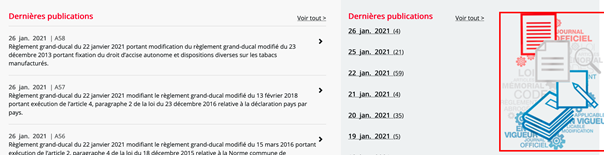Sur la page d'accueil, l'image « illustration_1.png » n'a pas d'attribut alt="".
Sur la page Visualisation graphiques, les images n’ont pas d’attribut alt="".
Cadres
L'absence d'identification des cadres peut poser un problème de repérage dans la structure de la page ou de compréhension des contenus pour les personnes aveugles.
Constats sur le site
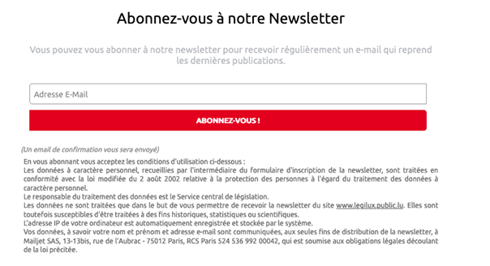Sur la page newsletter, le formulaire d'abonnement à la Newsletter se trouve dans une iframe sans titre.
Couleurs
Recommandation
Ne pas donner l'information uniquement par la couleur et utiliser des contrastes de couleurs suffisamment élevés pour les textes et les composants d'interface.
Contrastes des textes
Plusieurs couleurs présentent un rapport de contraste insuffisant, ce qui peut poser problème aux grands malvoyants et aux déficients visuels qui ont des difficultés à percevoir les couleurs ou les contrastes.
Rapports de contrastes définis par le RGAA
- Pour les textes qui ont une taille de police calculée inférieure à 24px sans effet de graisse ou une taille de police calculée inférieure à 18,5px avec effet de graisse, le rapport de contraste entre la couleur du texte (y compris le texte en image) et son arrière-plan doit être de 4.5:1, au moins.
- Pour les textes qui ont une taille de police calculée supérieure ou égale à 24px sans effet de graisse ou une taille de police calculée supérieure ou égale de 18,5px avec effet de graisse, le rapport de contraste entre la couleur du texte (y compris le texte en image) et son arrière-plan doit être de 3:1, au moins.
Vous pouvez foncer les couleurs pour obtenir le rapport de contraste exigé.
Si la charte graphique ne peut être modifiée, fournissez une méthode aux utilisateurs pour consulter le site avec des contrastes suffisants. Ceci peut être réalisé simplement avec une fonctionnalité JavaScript et une surcharge CSS des couleurs.
Vous pouvez voir un exemple de ce type de mécanisme sur le site sncf.com. Dans les réglages d'accessibilité, vous trouverez une option qui permet d'afficher le site avec des contrastes renforcés et inversés.
Constats sur le site
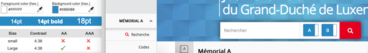Sur la page d’accueil, le texte à l'intérieur des composants permettant de choisir les mémoriaux, en blanc sur bleu (#880B8), a un contraste de 4,38 au lieu de 4,5.
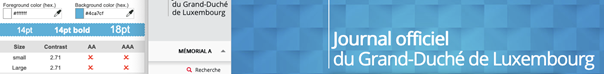Le texte de l’en-tête principal « Journal officiel du Grand-Duché de Luxembourg », en blanc sur fond composite de divers bleus, peut avoir un contraste descendant jusqu'à 2,71 au lieu de 4,5.
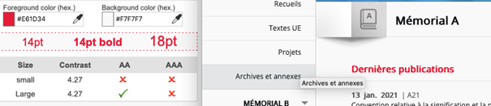Le texte «Dernières publications» en rouge (#E61D34) sur blanc, a un contraste de 4,27 au lieu de 4,5.
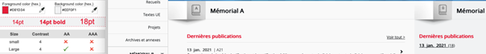Le texte du lien « MY LEGIBOX », en rouge (#E61D34) sur gris (#EEF0F1), a un contraste de 1,45 au lieu de 4,5.
Contraste des composants d'interface
Les composants d'interface, les illustrations porteuses d'information ou encore les mises en couleurs porteuses d'information doivent être suffisamment contrastés pour être perçus par les utilisateurs ayant des troubles de perception des couleurs. Par exemple, une icône porteuse d'information devra avoir un rapport de contraste avec la couleur de fond de 3. De même, pour un champ de saisie de formulaire, dont la zone active est matérialisée par sa bordure, alors la couleur de cette bordure devra avoir un rapport de contraste de 3 avec la couleur de fond de la page.
Constats sur le site
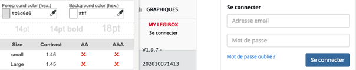Sur la page connexion, les bordures des champs sont grises dans un contexte blanc, avec un contraste de 1,45 au lieu de 3. On retrouve cette même problématique pour l’ensemble des champs de formulaires du site.
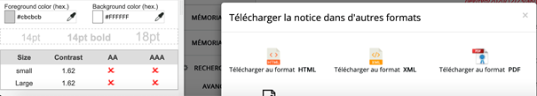Sur la page Règlement Grand-Ducal, le bouton « X » pour fermer la modale de téléchargement, en gris clair (#CBCBCB) sur blanc, a un contraste de 1,62 au lieu de 3.
Tableaux
Recommandation :
Donner un résumé à chaque tableau de données complexe, s'assurer que pour chaque tableau de données ayant un titre, ce titre est pertinent, identifier clairement les cellules d'en-tête, utiliser un mécanisme pertinent pour lier les cellules de données aux cellules d'en-tête. Pour chaque tableau de mise en forme, veiller à sa bonne linéarisation.
Tableaux de mise en forme
La restitution des tableaux peut poser problème pour les personnes aveugles, car les technologies d'assistance tentent d'optimiser la navigation dans les tableaux, en modifiant par exemple le comportement des flèches de direction pour circuler plus facilement entre les cellules.
Dans un tableau de données, cela est utile et correspond au format de données tabulaires, mais dans un tableau de mise en forme, ce comportement est problématique et peut venir perturber le parcours des informations.
L'API ARIA propose une propriété (role="presentation") qui permet d'annuler la sémantique des éléments restitués.
Constats sur le site
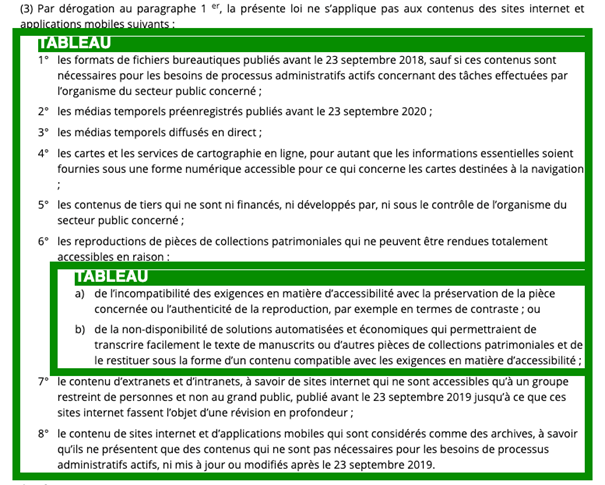Sur la page « Loi du 28 mai 2019 relative à l’accessibilité des sites internet et des applications mobiles des organismes du secteur public », le contenu utilise plusieurs tableaux de présentation qui n'ont pas de propriété ARIA role=presentation.
Tableaux de données complexes
Les tableaux de données complexes ont généralement plus d'un en-tête pour une même ligne ou une même colonne, contrairement aux tableaux simples.
Pour les tableaux de données complexes, les enjeux sont les suivants :
- Le tableau doit posséder un titre permettant de l'identifier et un résumé de sa structure (
<caption>) ; - Les en-têtes doivent être identifiés (balises
<th>) et doivent pouvoir être restitués lorsque l'utilisateur parcourt chaque cellule à l'aide de son lecteur d'écran (utilisation des attributsheadersetid).
Constats sur le site
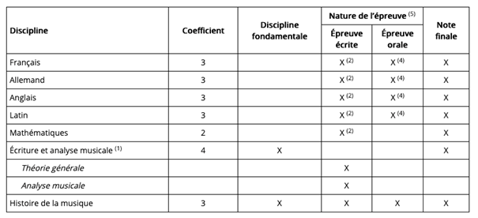Sur la page Règlement Grand-Ducal, plusieurs tableaux de données complexes n'ont ni titre ni résumé.
Scripts
Recommandation :
Donner si nécessaire à chaque script une alternative pertinente. Rendre possible le contrôle de chaque code script au moins par le clavier et la souris et s'assurer de leur compatibilité avec les technologies d'assistance. Identifier les messages de statut lorsque c'est nécessaire.
Utilisation des boutons et des liens
Pour les aveugles et les grands malvoyants qui utilisent un lecteur d'écran, ce manque de distinction claire entre les liens et les boutons peut poser de graves problèmes.
Ainsi, un bouton implémenté sous la forme d'un lien qui déclenche une action de la page, risque de perturber l'utilisateur qui s'attendra au chargement d'une nouvelle page.
De manière générale, les liens devraient être réservés à l'affichage d'une nouvelle page ou la création de liens d'accès rapide dans le contenu. Dans tous les autres cas, l'emploi d'un bouton d'action est plus pertinent.
Enfin, chaque bouton doit avoir un nom accessible défini, soit par l'intermédiaire d'un texte (visible ou positionné hors écran) ou d'une propriété title, aria-label ou aria-labelledby.
Constats sur le site

Sur la page du Règlement Grand-Ducal, le lien « Partager la notice » ouvre une modale, or c'est une balise <a> qui ne respecte pas le motif de conception ARIA button.
Utilisation inappropriée de propriétés ARIA
Les propriétés ARIA sont chargées de transmettre des informations indispensables à la restitution et l'utilisation des composants développés avec JavaScript aux technologies d'assistance. Une utilisation inappropriée peut poser des problèmes de restitution notamment.
Constats sur le site
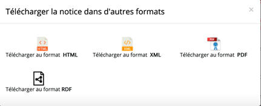Sur la page Règlement Grand-Ducal, le bouton « X » pour fermer la modale de téléchargement a pour propriété aria-label="Close". Le label doit être en français.
Éléments interactifs inaccessibles au clavier
Si un élément ne peut pas recevoir le focus ou n'est pas totalement utilisable au clavier, les utilisateurs pour lequel le clavier est le seul moyen de naviguer seront bloqués.
Constats sur le site
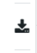Sur la page Règlement Grand-Ducal, le bouton qui ouvre la fenêtre de téléchargement de la notice dans d'autres formats ne peut jamais être atteint au clavier.
Sur la page d'accueil, les composants permettant de sélectionner le mémorial A ou B ne sont pas accessibles au clavier.
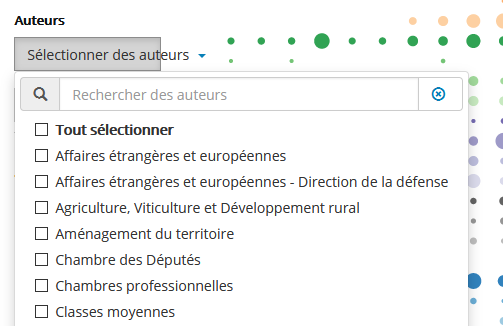Dans la page Nombre de publications par année et type, les cases à cocher disponibles dans la liste d’autocomplétion ne sont pas accessibles au clavier.
Gestion de la visibilité de zones
Le site possède des fonctionnalités d'affichage ou de masquage des zones de contenus. L'état affiché/masqué du contenu additionnel doit pouvoir être disponible pour les technologies d'assistance afin que les utilisateurs aveugles accèdent à cet état.
Pour ce type d’élément, l’implémentation du motif ARIA Disclosure est recommandé.
Constats sur le site
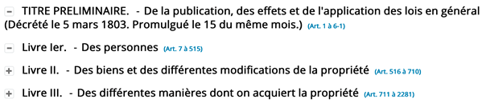Sur la page d'un code, les composants qui gèrent la visibilité de contenus additionnels ne respectent pas le motif ARIA Disclosure. Leur état « déplié/replié » n’est pas accessible à un utilisateur aveugle naviguant avec un lecteur d’écran.
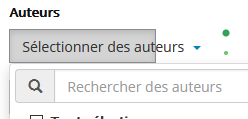Dans la page Nombre de publications par année et type, on retrouve la même problématique avec le composant « Sélectionner des auteurs ».
Autocomplétion
Les champs de saisie qui proposent des listes de résultats au fil de la saisie ne sont pas toujours accessibles aux utilisateurs qui ne perçoivent pas l’écran ou ne le perçoivent pas dans sa totalité. En effet, ils n’ont pas l’information que des résultats sont apparus par exemple, ou encore que la recherche ne retourne aucun résultat.
Constats sur le site
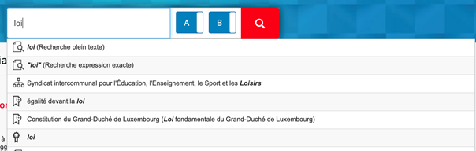Le site possède un champ d’autocomplétion sur différentes pages (par exemple dans la recherche sur la page d'accueil).
- La liste des propositions est en anglais « 14 results are available, use up and down arrow keys to navigate » ;
- Lorsqu’on explore la liste des suggestions avec les flèches de direction, la suggestion en surbrillance n’est pas restituée par les technologies d’assistance.
Message de statut
Les messages de statut concernent les messages d'alerte, de confirmation ou d'historisation. Dans tous ces cas, certains utilisateurs, par exemple les personnes aveugles ou les utilisateurs de loupe d’écran vocalisée, risquent de ne pas prendre connaissance de ces messages si leur restitution n'est pas contrôlée.
L'API ARIA propose plusieurs rôles spécifiques qui permettent de contrôler la restitution de ce type de message :
- Le
role="alert"pour les messages d'alerte ; - Le
role="status"pour les messages de confirmation ; - Le
role="log"pour les messages d'historisation.
L'utilisation appropriée de ces rôles va permettre de déclencher leur vocalisation dès qu'ils deviendront actifs (rendus visibles ou insérés dans le DOM).
Constats sur le site

Sur la page de recherche avancée, le résultat total est mis à jour à chaque règle. Pour un utilisateur aveugle qui n’a pas de vision globale de la page, ce message n’est pas accessible.
Afin de permettre la restitution de cette information, il est possible d’ajouter le role="status"
sur la zone mise à jour. Des tests de restitution seront néanmoins nécessaires pour s’assurer que l’implémentation est fonctionnelle.
Potentiomètre
Le site possède une fonctionnalité de slider (potentiomètre) multi-thumb pour filtrer par période.
Le slider doit être utilisable au clavier et les changements de valeur doivent être restitués pour les utilisateurs aveugles.
Pour ce type d’élément, l’implémentation du motif ARIA Slider est recommandé.
Constats sur le site
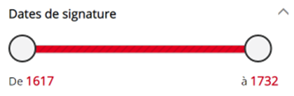Dans la page de recherche, un potentiomètre est disponible. Il n’est pas accessible au clavier ni compatible avec les technologies d’assistance.
Néanmoins, si les deux champs de saisie suivants (« de » et « à ») constituent une alternative à ce potentiomètre, alors le potentiomètre n’aura pas être rendu accessible. Ce point sera à discuter en restitution.
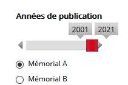Sur la page Nombre de publications par année et type, la sélection de la fourchette d’années de publications se fait par un potentiomètre qui n’est ni utilisable au clavier ni compatible avec les technologies d’assistance. Les utilisateurs naviguant exclusivement au clavier ne pourront jamais choisir les années de publications. L’implémentation du motif ARIA Slider s’impose ici.
Changement de contexte
Un changement de contexte est une situation où un utilisateur ne peut pas anticiper le fonctionnement d'une fonctionnalité lorsque celle-ci ouvre une nouvelle page, valide un formulaire ou ajoute ou modifie du contenu dans la page par exemple.
Cela concerne plus spécifiquement les fonctionnalités qui se lancent sans que l'utilisateur puisse les anticiper comme, par exemple, la soumission automatique d’un champ de formulaire sur la sélection d'un item ou lorsque l'utilisateur quitte un champ de saisie.
Constats sur le site
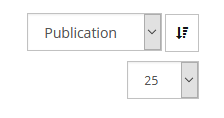Dans la page de recherche, lorsque l’utilisateur choisi une option dans la liste et que le focus est déplacé en dehors de la liste, la page se recharge. L’utilisateur doit être averti de ce comportement inhabituel avant son déclenchement.
Éléments obligatoires
Recommandation
Vérifier que chaque page web a un code valide selon le type de document, un titre pertinent et une indication de langue par défaut. Vérifier que les balises ne sont pas utilisées uniquement à des fins de présentation, que les changements de langues et de direction de sens de lecture sont indiqués.
Titre de la page
Le titre de la page (visible dans l'onglet du navigateur) est un élément de repère dans le site web. Pour les utilisateurs de lecteur d'écran (utilisateurs aveugles ou grands malvoyants), c'est le premier élément restitué par le lecteur d'écran au chargement de la page. Cela permet de donner du contexte aux utilisateurs qui n'ont pas une vision globale de la page. Pour les utilisateurs avec des troubles de la mémoire, c'est l'information à laquelle ils accèdent lorsqu'ils naviguent avec l'historique de navigation du navigateur. Il est donc essentiel d'avoir des titres de pages pertinents, concis et très souvent uniques dans le site, et qui reflètent de la position de l'utilisateur dans le site web.
Il est des cas particuliers, comme les pages dont le contenu est une liste de résultats paginés (ex. : les résultats de recherche), pour lesquels le titre doit refléter la nature de la recherche ainsi que le numéro de page en cours de consultation.
Constats sur le site
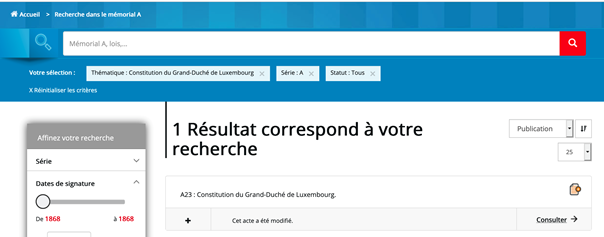Sur la page de recherche, tout ou partie des termes de la recherche, les principaux filtres (ou la mention « filtres appliqués » si présence d’un trop grand nombre de filtres) et la pagination doivent apparaître dans le titre de la page.
Indication de langue
Les lecteurs d'écran utilisent les indications de langue pour vocaliser le contenu dans la langue définie. La page doit contenir une définition de langue principale (généralement sur l'élément html).
Ensuite, les éléments de langue étrangère présente dans le contenu doivent être signalés. Si dans la page on trouve, des termes absents du dictionnaire de la langue principale de la page, il faut les identifier afin que le lecteur d'écran restitue dans la langue appropriée. En effet, une mauvaise prononciation pourrait mener à des incompréhensions pour les utilisateurs qui reposent uniquement sur des restitutions orales. Les noms propres sont exclus de cette obligation.
Constats sur le site
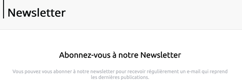Sur le site, certains mots anglais tel que « Newsletter », repris plusieurs fois sur la page newsletter ne sont pas indiqués en anglais via un attribut lang="en".
Validité du code
Les technologies d'assistances, comme les lecteurs d'écran ou les systèmes de contrôle à la voix, s'appuient sur le code des pages pour générer les restitutions et les interactions avec l'utilisateur. Un lecteur d'écran va exploiter le code HTML fourni par le navigateur et les informations accessibles au moyen des API d'accessibilité du système.
Si le code comporte des erreurs (balises mal fermées par exemple), il y a un risque que les fonctionnalités du lecteur d'écran soient impactées, comme la navigation de lien en lien par exemple.
Pour vérifier la conformité d'une page, vous pouvez utiliser le validateur mis à disposition par le W3C.
Constats sur le site
Le site présente un code source robuste dans l’ensemble, mais sur certaines pages, on constate des erreurs d’imbrications des balises ou encore des valeurs d’identifiants dupliquées.
Balises utilisées à des fins de présentation
Les éléments de structure HTML ont chacun une sémantique particulière (paragraphe, titre, image, lien, etc.). Si les éléments sont mal employés (détournés de leur utilité première), cela peut poser des problèmes aux utilisateurs qui naviguent à l'aide d'une technologie d'assistance (lecteur d'écran, plug-in…). En effet, les technologies d'assistance disposent de raccourcis à disposition permettant de naviguer rapidement entre certains types d'éléments (paragraphes, titres, listes, etc.). Si ces éléments sont mal employés, les utilisateurs ne peuvent pas utiliser ces fonctionnalités de repère et de navigation dans le contenu.
Constats sur le site
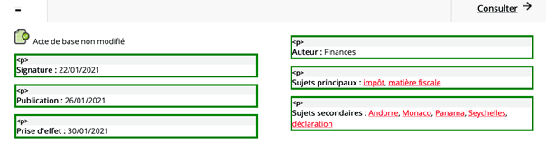Quand on accède au détail d'un résultat sur la page de recherche, le statut (exemple « Acte de base non modifié ») est intégré directement dans une <div>.
Structuration de l'information
Recommandation
Utiliser des titres, des listes, des abréviations et des citations pour structurer l'information. S'assurer que la structure du document est cohérente.
Titres
Le titrage des contenus est une étape importante dans la structuration des contenus. Cela répond à deux besoins :
- identifier rapidement un contenu recherché ;
- naviguer rapidement dans le contenu en se déplaçant de titre en titre.
Un titrage correct fournit à l'utilisateur de lecteur d'écran un plan du document et lui permet de naviguer de titre en titre pour se déplacer plus rapidement dans le contenu de la page.
Pour valider la structure de votre page, vous pouvez utiliser l'extension Firefox HeadingsMap. Lorsque l'extension est active, sélectionnez l'onglet « Headings » et vérifiez la cohérence et l'imbrication des titres.
Constats sur le site
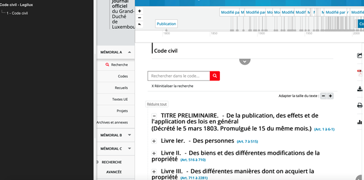Plusieurs contenus du site sont insuffisamment titrés. Sur la page d'un code par exemple, le contenu est visuellement hiérarchisé « Livre Ier Des personnes », « Livre II Des biens et des différentes modifications de la propriété », « Livre III Des différentes manières dont on acquiert la propriété » et chaque livre est découpé par plusieurs titres. Or la page ne comporte qu'un titre HTML : <h1> Code Civil</h1>.
Listes
La structuration en listes permet aux utilisateurs de lecteurs d'écran de consulter plus rapidement le contenu, grâce à des raccourcis spécifiques, et d'accéder directement à une liste ou de la passer sans avoir à en parcourir tous les items.
Constats sur le site
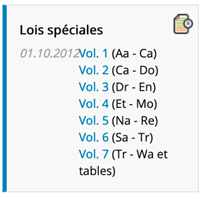Sur la page liste des codes, les liens des différents volumes se présentent sous la forme d’une liste d’élément, mais ceux-ci ne sont pas structurés comme tels.
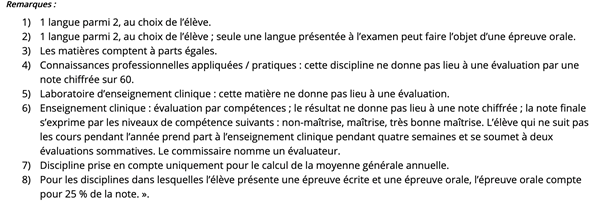Sur la page du Règlement Grand-Ducal, la liste d’éléments sous la mention « Remarques » est insérée dans un tableau alors qu’elle devrait utiliser l’élément HTML approprié (<ol>/<li>).
Structure du document
L'utilisation correcte des balises HTML5 et des landmarks ARIA va permettre d'enrichir la restitution pour les utilisateurs aveugles qui ne perçoivent pas les mises en forme : la navigation principale ne sera plus perçue simplement comme une liste de liens, elle sera restituée à l'utilisateur comme un élément de navigation, par l'intermédiaire du lecteur d'écran qui annoncera « région » ou « repère ».
De plus, ces marqueurs sémantiques vont également constituer des éléments de navigation rapide dans la page. Grâce à un raccourci clavier, certains utilisateurs vont pouvoir naviguer plus rapidement entre les régions qui auront été ainsi identifiées.
Constats sur le site
- La navigation principale n'est pas indiquée par un
<nav role=navigation aria-label="menu principal">; - Le contenu principal n'est pas indiqué par un
<main role="main">; - L’élément
<header>principal du site n'a pas derole="banner"; - L'élément
<footer>principal du site n'a pas derole="contentinfo".
Présentation de l'information
Recommandation
Utiliser des feuilles de styles pour contrôler la présentation de l'information. Vérifier l'effet de l'agrandissement des tailles des caractères sur la lisibilité. S'assurer que les liens sont correctement identifiables, que la prise de focus est signalée, que l'interlignage est suffisant et donner la possibilité à l'utilisateur de contrôler la justification des textes. S'assurer que les textes cachés sont correctement restitués et que l'information n'est pas donnée uniquement par la forme ou la position d'un élément. S'assurer que les contenus sont lisibles et utilisables dans une fenêtre de largeur réduite. Veiller à ce que l'application de paramètres typographiques n'entraîne pas la perte de contenu ou de fonctionnalité. S'assurer que les contenus qui apparaissent au survol et à la prise de focus puissent être contrôlés par l'utilisateur.
Utilisation de CSS exclusivement
Certains utilisateurs qui présentent des troubles de la lecture (personnes dyslexiques par exemple), vont avoir besoin d'adapter la présentation des pages avec leurs propres mises en forme. Cela est possible sans difficulté si le site web utilise exclusivement les feuilles de styles CSS pour réaliser les mises en forme. Cependant, l'utilisation d'attributs et balises HTML de mise en forme rend ces adaptations plus compliquées, sinon impossibles.
Le RGAA donne la liste des attributs et balises qu'il est interdit d'utiliser.
Constats sur le site
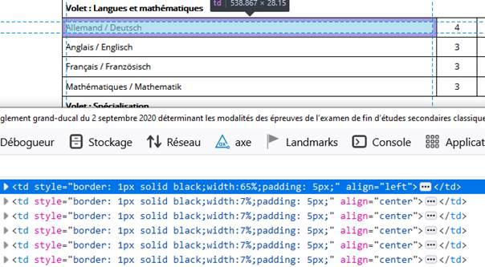- Sur la page du Règlement Grand-Ducal, les tableaux ont des attributs
width,cellspacing,cellpadding. - Sur la page newsletter, l'iframe a des attributs
width,height,marginwidth,marginheightetframeborder.
Couleur de police et couleur de fond des textes
De nombreux navigateurs permettent aux utilisateurs de choisir une couleur par défaut pour le texte et le fond, à utiliser sans avoir à modifier tous les styles spécifiés par l'auteur. Cela permet aux utilisateurs de visualiser des pages dont les couleurs n'ont pas été spécifiées par l'auteur dans leur combinaison de couleurs préférée.
Pour cette raison, si l'auteur du site a défini une couleur de police sans spécifier de couleur de fond associée, il est possible que le contraste résultant ne soit plus suffisant pour l'utilisateur.
Constats sur le site
Le site n'a pas de couleur de fond par défaut (la définir sur la balise html ou body permet à tous les éléments du site d'en hériter). De ce fait, beaucoup de texte n'a pas de couleur de fond définie.
Agrandissement des tailles de texte
Certaines personnes déficientes visuelles, également des personnes ayant des difficultés de lecture comme les personnes dyslexiques, ont besoin d'adapter la taille du texte à l'écran.
L'agrandissement des caractères ne doit pas provoquer de perte d'informations. À 200%, le contenu doit rester lisible et compréhensible, toutes les informations doivent rester présentes.
Il existe plusieurs méthodes pour contrôler l'agrandissement des caractères :
- La fonction d'agrandissement du texte du navigateur (le zoom texte) ;
- Les fonctions de zoom graphique du navigateur ;
- Un composant d'interface propre au site permettant d'agrandir le texte ou de zoomer.
Constats sur le site
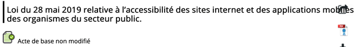Sur la page d'une loi, le titre de la loi et la barre des boutons de partage / téléchargement se chevauchent.
Visibilité de la prise de focus
Les personnes avec un handicap moteur qui naviguent au clavier peuvent rencontrer des difficultés considérables à utiliser du contenu si elles ne sont pas en mesure de repérer l'indication visuelle du focus et ses déplacements.
Constats sur le site
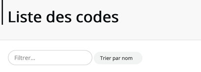Sur la page liste des codes, le bouton « Trier par nom » n'a pas de prise de focus visible.
Largeur réduite
Il s'agit ici de tester la capacité des contenus à se réorganiser lorsqu'un utilisateur malvoyant doit réaliser un zoom graphique de 400%. À ce titre, on teste la lisibilité des contenus dans une fenêtre de largeur réduite à 320px.
On s'assure que l'utilisateur a accès à tous les contenus et que tous les contenus sont lisibles sans avoir recours à la barre de défilement horizontale.
Constats sur le site
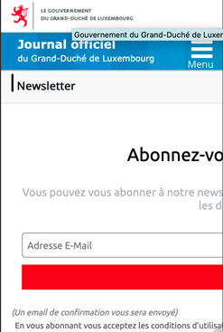Sur la page newsletter, le formulaire se trouve dans une iFrame qui a une largeur fixe. Le formulaire n'est pas utilisable sans avoir recours à un défilement horizontal.
Paramètres typographiques
Les utilisateurs malvoyants et/ou dyslexiques ont souvent recours à des adaptations de la présentation des textes. Pour cela, on doit s'assurer que de tels paramètres ne viennent pas perturber leur lecture sur le site.
Les présentations doivent supporter l'application de paramètres typographiques visant à augmenter les interlignages, interlettrages, les espaces entre les mots et entre les paragraphes. L'application de ces paramètres ne doit pas entraîner la perte de contenus ou de fonctionnalité :
- L'interlignage augmenté de 1,5 fois la taille de la police
- L'espacement entre les paragraphes augmenté de 2 fois la taille de la police
- L'espacement des lettres augmenté de 0,12 fois la taille de la police
- L'espacement des mots augmenté jusqu'à 0,16 fois la taille de la police
Constats sur le site
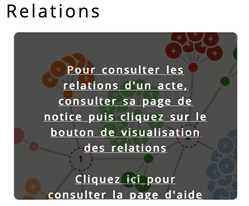Sur la page visualisations graphiques, le contenu du bloc « relations » est tronqué si les paramètres typographiques sont modifiés.
Contenus additionnels au survol et au focus
Les contenus additionnels qui apparaissent au survol ou à la prise de focus (par exemple, un menu déroulant, une infobulle d'information), peuvent être contrôlés par l'utilisateur. Par exemple, les utilisateurs malvoyants utilisateurs de loupe d'écran peuvent déclencher l'affichage accidentel des contenus qui apparaissent au survol et ces affichages non désirés perturbent la consultation pour ces utilisateurs. L'utilisateur doit alors disposer d'un moyen simple pour les masquer et continuer sa consultation.
Également, en utilisant une loupe d'écran, il est probable que le contenu additionnel soit en fait apparu en dehors de la zone de zoom de la loupe, l'utilisateur doit pouvoir survoler le contenu additionnel à la souris.
Constats sur le site
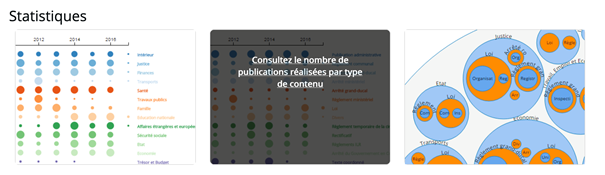Sur la page visualisations graphiques, au survol des blocs, un contenu additionnel apparaît. Ce contenu doit également apparaître à la prise de focus au clavier.
Formulaires
Recommandation :
Associer pour chaque formulaire chacun de ses champs à son étiquette, grouper les champs dans des blocs d'informations de même nature, regrouper les items de même nature dans les listes de choix, donner à chaque bouton un intitulé explicite. Vérifier la présence d'aide à la saisie, s'assurer que le contrôle de saisie est accessible et que l'utilisateur peut contrôler les données à caractère financier, juridique ou personnel.
Étiquettes et champs
Les champs de formulaires doivent tous posséder des étiquettes correctement reliées.
Une étiquette de champ est un texte situé à proximité du champ de formulaire qui permet de connaître la nature, le type ou le format des informations attendues.
De cette manière, lorsqu'un utilisateur entre dans le champ de saisie avec un lecteur d'écran, le lecteur d'écran lit le contenu de l'étiquette. L'utilisateur comprend alors ce qu'il doit saisir.
Sans cela, même si une étiquette est présente visuellement, l'utilisateur entendra « champ de saisie vide » en entrant dans le champ et ne saura donc pas quoi saisir.
Constats sur le site
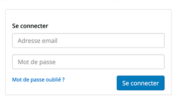Sur la page de connexion, les champs « adresse email » et « mot de passe » ont uniquement un placeholder, or un placeholder n'est pas une étiquette. Il manque une propriété aria-label
qui doit reprendre la même valeur que le placeholder.
Contrôle de saisie et aide à la saisie
Tous les champs obligatoires doivent être identifiés préalablement à toute validation de l’utilisateur.
Pour les champs qui attendent un format de saisie particulier pour être validés, ce format doit être spécifié à l’utilisateur par un passage de texte visible à proximité du champ. De plus, si l’utilisateur commet une erreur sur ce champ, alors le message d’erreur doit présenter un exemple réel de saisie.
Enfin, les messages d'erreur de saisie des champs de formulaire doivent être liés correctement aux champs en erreur.
Constats sur le site
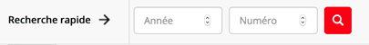Sur la page archives, le champ Année attend un nombre supérieur ou égal à 1000. Cette indication doit être donnée avant la saisie.
Regroupements de champs et légendes
Les regroupements de champs sont utiles pour ne pas induire certains utilisateurs en erreur, notamment les personnes aveugles.
Les cas typiques de regroupements nécessaires sont les groupes de cases à cocher ou de boutons radio
Il est nécessaire d'implémenter les champs dans un regroupement lorsque c'est nécessaire et il est obligatoire de définir une légende à ce regroupement.
Constats sur le site
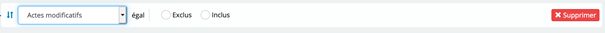Sur la page de recherche avancée, les boutons radios « Exclus » et « Inclus » ne sont pas dans un <fieldset>.
Identification des données attendues
Certains utilisateurs qui ont des troubles d'accès au langage verbal (paralysie cérébrale, aphasie par exemple) auront des difficultés à accéder au sens des termes écrits. Ainsi, pour leur permettre de remplacer les étiquettes présentes dans les formulaires par des étiquettes (verbales ou imagées) qu'ils connaissent, il est nécessaire d'identifier les champs avec un attribut particulier, de sorte qu'une technologie d'assistance pourra réaliser la personnalisation du formulaire nécessaire à l'utilisateur.
L'identification de ces champs permet également aux utilisateurs d'employer des outils pour remplir automatiquement les champs identifiés avec des valeurs de l'utilisateur.
On ne va rechercher que les champs qui attendent une donnée personnelle. Le RGAA demande d'utiliser l'attribut autocomplete et il fournit l'ensemble des valeurs possibles pour l'attribut.
Constats sur le site
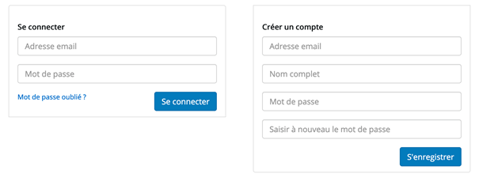Sur la page de connexion, le formulaire de création de compte n'a pas d'autocomplete :
- pour le champ email :
autocomplete="email"; - pour le nom complet :
autocomplete="name".
Navigation
Recommandation :
Faciliter la navigation dans un ensemble de pages par au moins deux systèmes de navigation différents (menu de navigation, plan du site ou moteur de recherche), un fil d'Ariane et l'indication de la page active dans le menu de navigation. Identifier les groupes de liens importants et la zone de contenu et donner la possibilité de les éviter par des liens de navigation interne. S'assurer que l'ordre de tabulation est cohérent et que la page ne comporte pas de piège au clavier. S'assurer que les raccourcis clavier qui utilisent une seule touche sont contrôlables par l'utilisateur.
Systèmes de navigation
Le RGAA demande qu'un site propose au moins deux systèmes de navigations différents. Prévoir deux systèmes de navigation au moins est important, car :
- tous les utilisateurs ne naviguent pas de la même manière ;
- certains systèmes de navigation peuvent s'avérer trop complexes à utiliser, en particulier pour les personnes qui ont recours à des technologies d'assistance. Par exemple, un menu de navigation trop riche, comme un méga-menu, peut nécessiter beaucoup d'actions pour un utilisateur qui navigue exclusivement au clavier, et donc rendre sa recherche d'information très laborieuse.
Par systèmes de navigation, on entend tout procédé permettant une navigation dans le site ou dans une page, parmi :
- un menu de navigation principal ;
- un plan du site ;
- un moteur de recherche.
Note : un moteur de recherche est considéré comme un moyen de navigation s'il indexe toutes les pages du site (y compris les pages de type « Mentions légales » ou « Politique de confidentialité »), et non pas seulement un choix limité (par exemple, seulement les offres tarifaires).
Le plan du site, s’il est présent, doit être représentatif de l’arborescence du site et ne proposer que des liens fonctionnels.
Constats sur le site
Le site possède bien une navigation principale, mais ne possède ni plan du site, ni moteur de recherche indexant l'intégralité du contenu. Le moteur de recherche actuel n'indexe que le contenu législatif des mémoriaux.
Liens d'accès rapide
On note l'absence d'un lien d'accès rapide au contenu au moins. Les liens d'accès rapides sont utiles aux utilisateurs qui naviguent au clavier, mais aussi aux utilisateurs malvoyants qui utilisent une loupe d'écran afin de sauter rapidement les éléments redondants, comme la navigation.
Pour cela, il est préférable que ces liens soient toujours visibles à l'écran. Malgré cela, ces liens peuvent être positionnés hors écran, mais doivent au moins être rendus visibles à la prise de focus.
Il est donc nécessaire d'implémenter au moins un lien d'accès rapide au contenu, qui permet de sauter toute la navigation principale.
Constats sur le site
Le site ne dispose d'aucun lien d'accès rapide.
Consultation
Ordre de tabulation
La navigation dans les contenus peut être considérablement compliquée pour les personnes aveugles ou les personnes handicapées motrices qui naviguent au clavier si l'ordre de tabulation n'est pas cohérent.
L'ordre de tabulation est déterminé par l'ordre des éléments dans le code HTML. Il ne suit pas forcément l'ordre de lecture de la page ou de l'écran, mais il doit être cohérent en fonction de la nature des contenus et des fonctionnalités.
Constats sur le site
Recommandation
Vérifier que l'utilisateur a le contrôle des procédés de rafraîchissement, des changements brusques de luminosité, des ouvertures de nouvelles fenêtres et des contenus en mouvement ou clignotants. Ne pas faire dépendre l'accomplissement d'une tâche d'une limite de temps sauf si elle est essentielle et s'assurer que les données saisies sont récupérées après une interruption de session authentifiée. Proposer des versions accessibles ou rendre accessibles les documents en téléchargement. S'assurer que la consultation n'est pas dépendante de l'orientation de l'écran. Toujours proposer un geste simple en alternative d'un geste complexe permettant de réaliser une action.
Documents en téléchargement
Assurez-vous que chaque document soit accessible (cf. les Guides de créations de documents bureautiques accessibles), ou qu'il dispose d'une alternative accessible proposant le même contenu (par exemple, une version HTML correctement structurée).
Constats sur le site
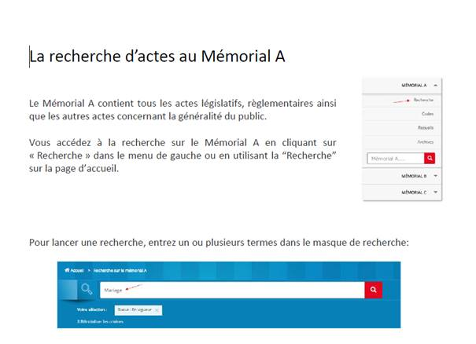Sur la page aide, des notices d’aide sont téléchargeables au format PDF. Bien qu’elles soient correctement structurées, on constate des défauts dans ces notices : les images de décoration ne sont pas correctement identifiées et de nombreux paragraphes vides sont utilisés pour créer des mises en forme.
Gestes complexes
Certaines personnes handicapées motrices ne peuvent pas réaliser de gestes complexes, elles utilisent généralement des technologies d'assistance qui leur permettent d'interagir uniquement avec un geste simple comme cliquer sur un bouton par exemple.
Dans ces situations il est indispensable que le site ou l'application propose pour chaque fonctionnalité basée sur un geste complexe une alternative au moyen d'un geste simple.
Le geste complexe nécessite l'utilisation d'un contact multipoint comme par exemple utiliser deux doigts pour zoomer ou dézoomer ou tracer une trajectoire.
Le geste simple peut être un contact sur un seul point ou toute variation multiple de ce contact (double clic, etc.).
Constats sur le site
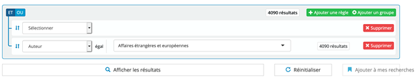Sur la page de recherche avancée, les règles ne peuvent être réorganisées que via une action de drag and drop qui nécessite un geste complexe. L'absence de bouton haut/bas pour déplacer les règles bloque les utilisateurs naviguant autrement qu'avec une souris.